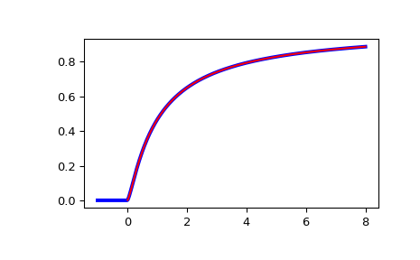

scipy.special.ncfdtr¶
-
scipy.special.ncfdtr(dfn, dfd, nc, f) = <ufunc 'ncfdtr'>¶ Cumulative distribution function of the non-central F distribution.
The non-central F describes the distribution of,
\[Z = \frac{X/d_n}{Y/d_d}\]where \(X\) and \(Y\) are independently distributed, with \(X\) distributed non-central \(\chi^2\) with noncentrality parameter nc and \(d_n\) degrees of freedom, and \(Y\) distributed \(\chi^2\) with \(d_d\) degrees of freedom.
- Parameters
- dfnarray_like
Degrees of freedom of the numerator sum of squares. Range (0, inf).
- dfdarray_like
Degrees of freedom of the denominator sum of squares. Range (0, inf).
- ncarray_like
Noncentrality parameter. Should be in range (0, 1e4).
- farray_like
Quantiles, i.e. the upper limit of integration.
- Returns
- cdffloat or ndarray
The calculated CDF. If all inputs are scalar, the return will be a float. Otherwise it will be an array.
See also
ncfdtriQuantile function; inverse of
ncfdtrwith respect to f.ncfdtridfdInverse of
ncfdtrwith respect to dfd.ncfdtridfnInverse of
ncfdtrwith respect to dfn.ncfdtrincInverse of
ncfdtrwith respect to nc.
Notes
Wrapper for the CDFLIB [1] Fortran routine cdffnc.
The cumulative distribution function is computed using Formula 26.6.20 of [2]:
\[F(d_n, d_d, n_c, f) = \sum_{j=0}^\infty e^{-n_c/2} \frac{(n_c/2)^j}{j!} I_{x}(\frac{d_n}{2} + j, \frac{d_d}{2}),\]where \(I\) is the regularized incomplete beta function, and \(x = f d_n/(f d_n + d_d)\).
The computation time required for this routine is proportional to the noncentrality parameter nc. Very large values of this parameter can consume immense computer resources. This is why the search range is bounded by 10,000.
References
- 1
Barry Brown, James Lovato, and Kathy Russell, CDFLIB: Library of Fortran Routines for Cumulative Distribution Functions, Inverses, and Other Parameters.
- 2
Milton Abramowitz and Irene A. Stegun, eds. Handbook of Mathematical Functions with Formulas, Graphs, and Mathematical Tables. New York: Dover, 1972.
Examples
>>> from scipy import special >>> from scipy import stats >>> import matplotlib.pyplot as plt
Plot the CDF of the non-central F distribution, for nc=0. Compare with the F-distribution from scipy.stats:
>>> x = np.linspace(-1, 8, num=500) >>> dfn = 3 >>> dfd = 2 >>> ncf_stats = stats.f.cdf(x, dfn, dfd) >>> ncf_special = special.ncfdtr(dfn, dfd, 0, x)
>>> fig = plt.figure() >>> ax = fig.add_subplot(111) >>> ax.plot(x, ncf_stats, 'b-', lw=3) >>> ax.plot(x, ncf_special, 'r-') >>> plt.show()
